🔑 Google API キー取得ガイド 🔑 Panduan Kunci API Google
1. Google AI Studio にアクセス 1. Akses Google AI Studio
👉 Google AI Studio 👉 Google AI StudioGoogleアカウントでログインしてください。 Silakan masuk dengan akun Google Anda.
2. API キーを作成 2. Buat Kunci API
1. 「API キーを作成」ボタンをクリックします。 1. Klik tombol "Buat kunci API".
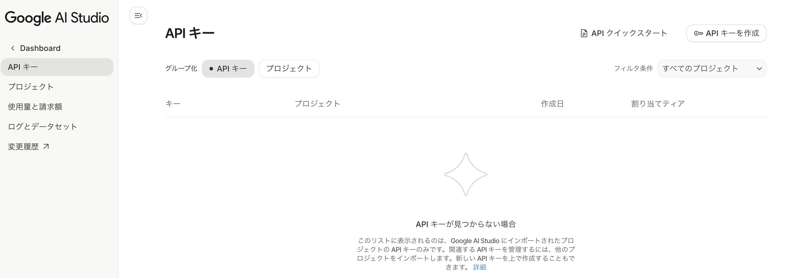 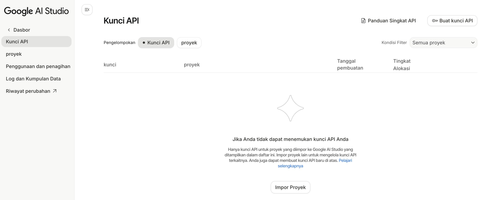2. プロジェクトが無い場合は、プロジェクトを作成します。 2. Jika tidak ada proyek, buat proyek baru.
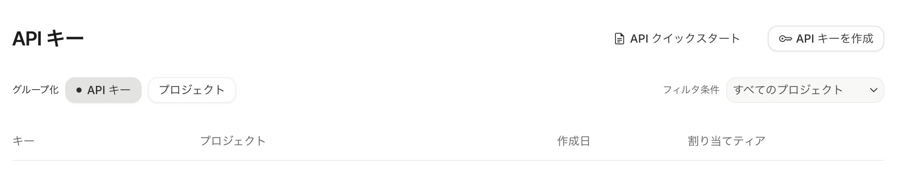 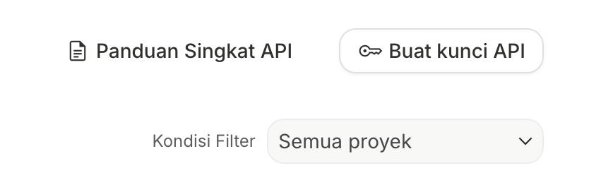 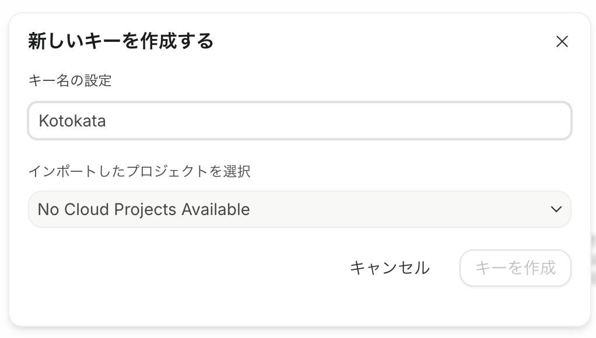 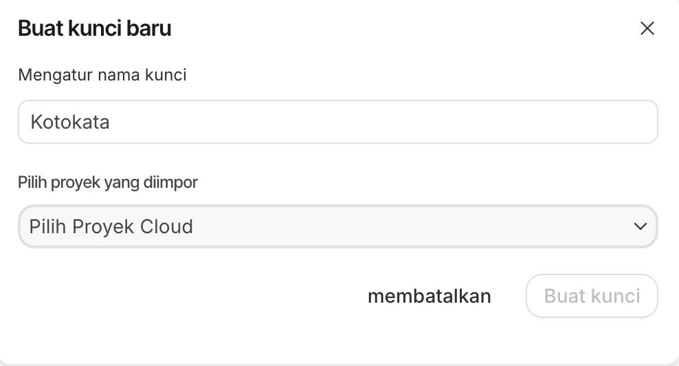
3. プロジェクト名を入力して「プロジェクトを作成」をクリックします。
※プロジェクト名は自分がわかりやすければ何でも構いません。ここでは「Kotokata」としています。
3. Masukkan nama proyek dan klik "Buat proyek".
※Nama proyek bisa apa saja yang mudah Anda pahami. Di sini kami menggunakan "Kotokata".
4. プロジェクトが作成されたら、キー名を設定して「キーを作成」をクリックします。
※キー名も自分がわかりやすければ何でも構いません。ここでは「Kotokata」としています。
4. Setelah proyek dibuat, atur nama kunci dan klik "Buat kunci".
※Nama kunci juga bisa apa saja yang mudah Anda pahami. Di sini kami menggunakan "Kotokata".
5. 作成されたAPIキーのお支払い情報を設定します。 5. Atur informasi penagihan untuk kunci API yang dibuat.
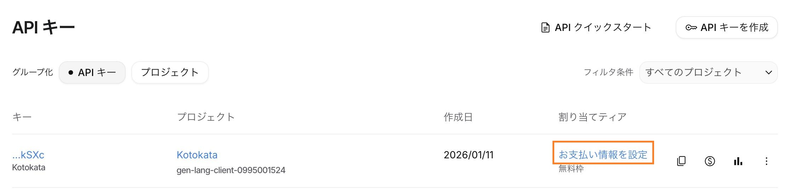

3. 請求先の有効化（必要な方のみ） 3. Mengaktifkan akun penagihan (opsional)
1. 「アカウント情報」の設定画面が表示されたら、国を選択し「同意して続行」をクリックします。 1. Saat layar “Informasi akun” muncul, pilih negara lalu klik “Lanjutkan”.
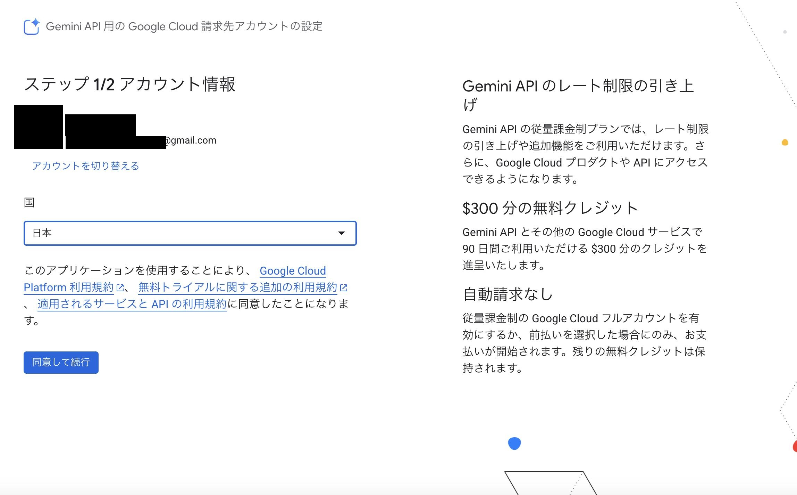 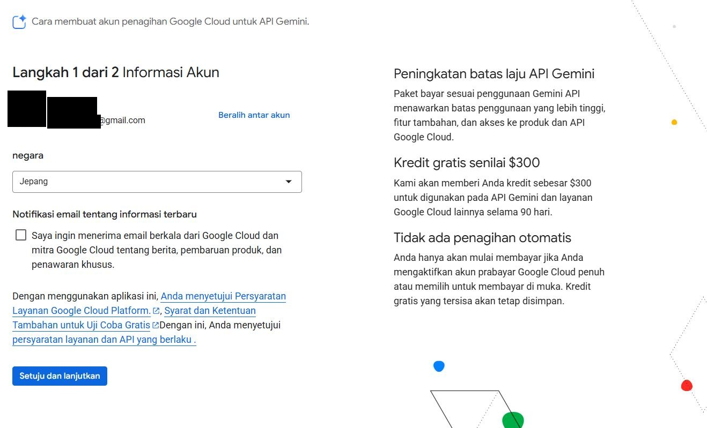2. 「お支払い情報の確認」で連絡先情報を入力し、「無料で利用開始」をクリックします。カード情報を登録しますが、この後「有料化」ボタンを押さなければ課金されることはありません。（詳細はgoogleの仕様をご確認ください） 2. Pada “Konfirmasi informasi pembayaran”, isi informasi kontak (nama dan alamat), lalu klik “Mulai gratis”. Info kartu akan didaftarkan, namun tidak akan ditagih kecuali Anda menekan tombol “Aktifkan penagihan” setelahnya. (Detail mengikuti ketentuan Google)
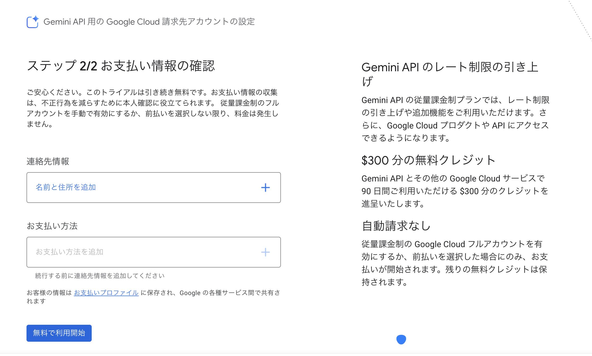 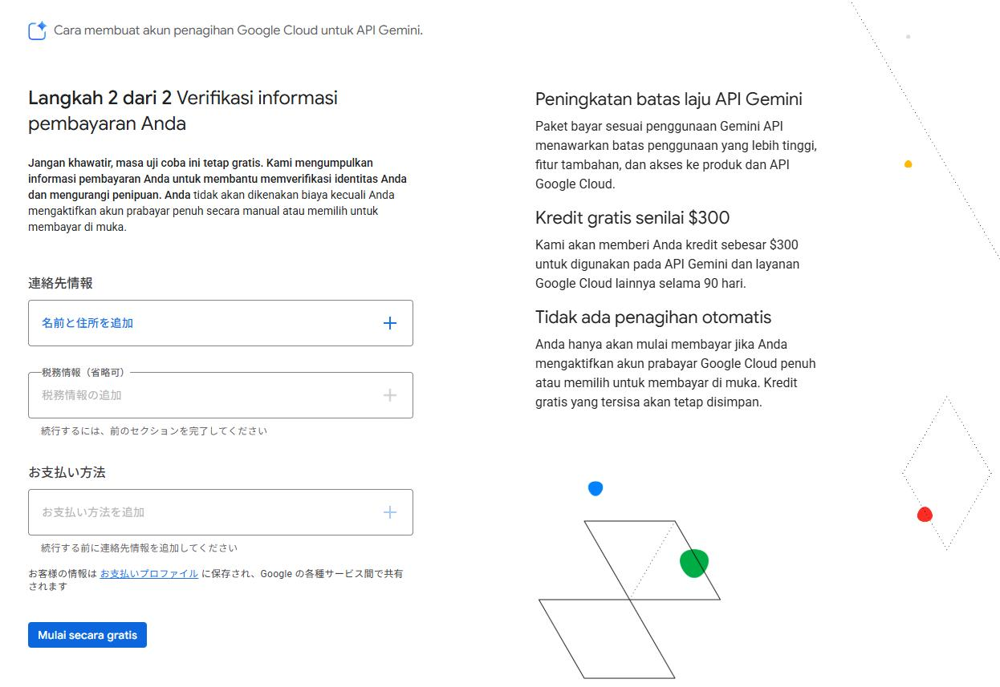
3. 途中でこの画面表示された場合は、「リンクされた請求先アカウントに移動」をクリックしてください。（アカウントの状態により表示が異なります） 3. Jika muncul “Beberapa akun penagihan”, klik “Pindah ke akun penagihan tertaut”.
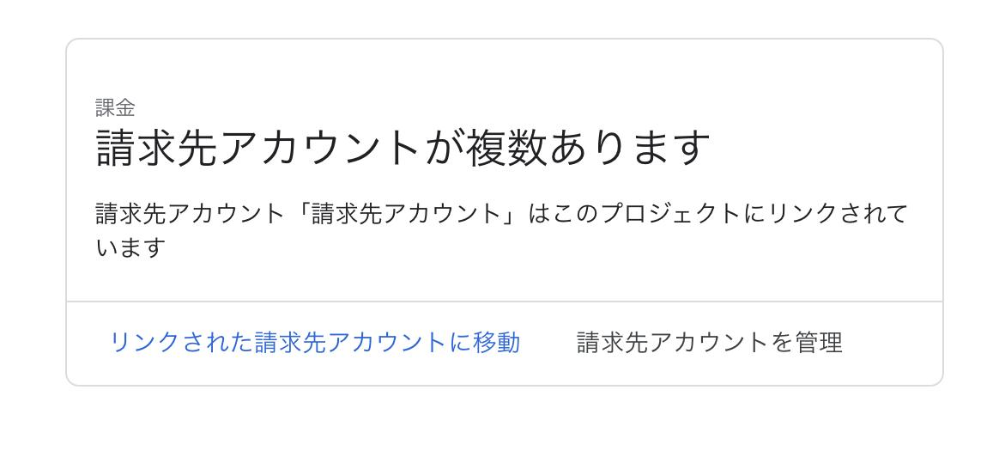 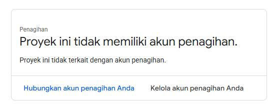4. Google Cloud のコンソールで支払い管理画面が表示されます。一定期間（2026年1且現在、3か月で$300分）は無料で利用可能。この後「有効化」ボタンを押すと継続して無料期間以降も利用可能です。 4. Di konsol Google Cloud akan ditampilkan halaman pengelolaan pembayaran. Selama masa uji coba (per Jan 2026: 3 bulan dengan kredit $300) Anda dapat menggunakan layanan secara gratis. Menekan tombol “Aktifkan” akan mengaktifkan akun sehingga Anda dapat terus menggunakan layanan setelah masa gratis berakhir.
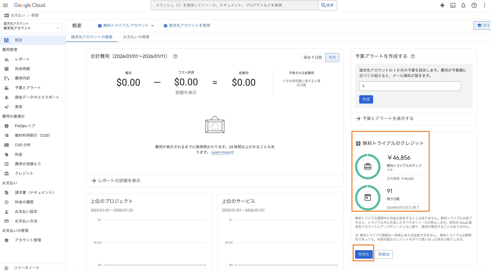 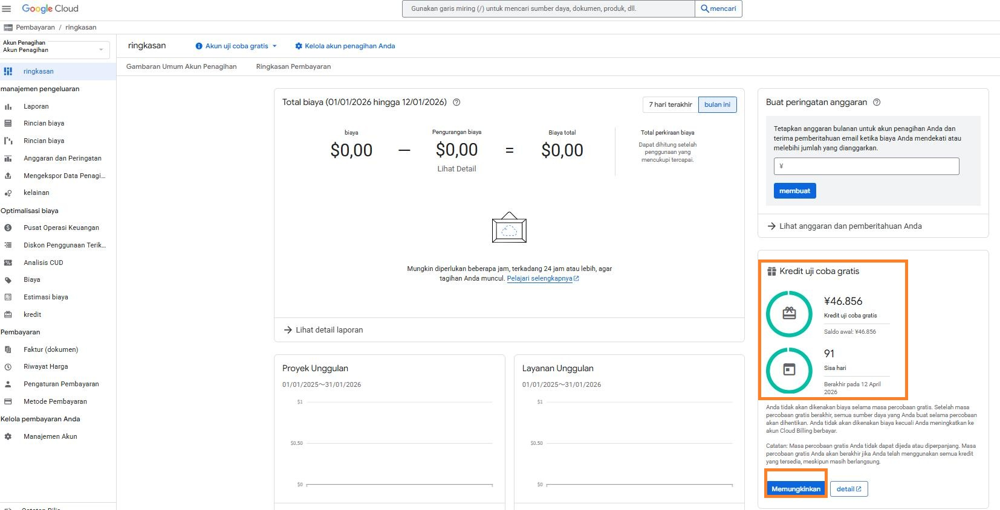4. KotokataにAPIキーを設定する 4. Masukkan API key ke Kotokata
1. APIキーの一覧に戻ると、割り当てティアが「無料トライアル」に変わっています。作成されたキーをコピーします。 1. Saat kembali ke daftar API key, tier alokasi akan menjadi “Free Trial”. Salin kunci yang dibuat.
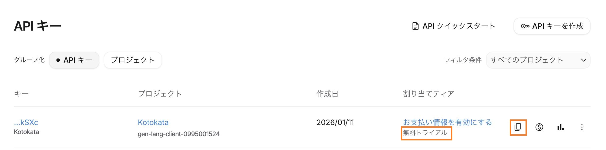 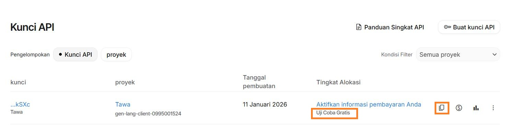2. Kotokataアプリの設定画面にある「Gemini APIキー」へペーストし、保存します。 2. Tempelkan kunci ke kolom “Gemini API Key” pada layar Pengaturan aplikasi Kotokata, lalu simpan.
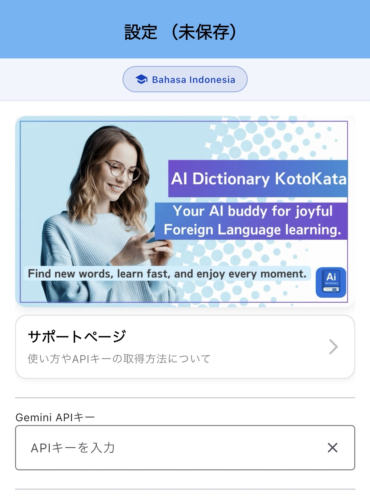 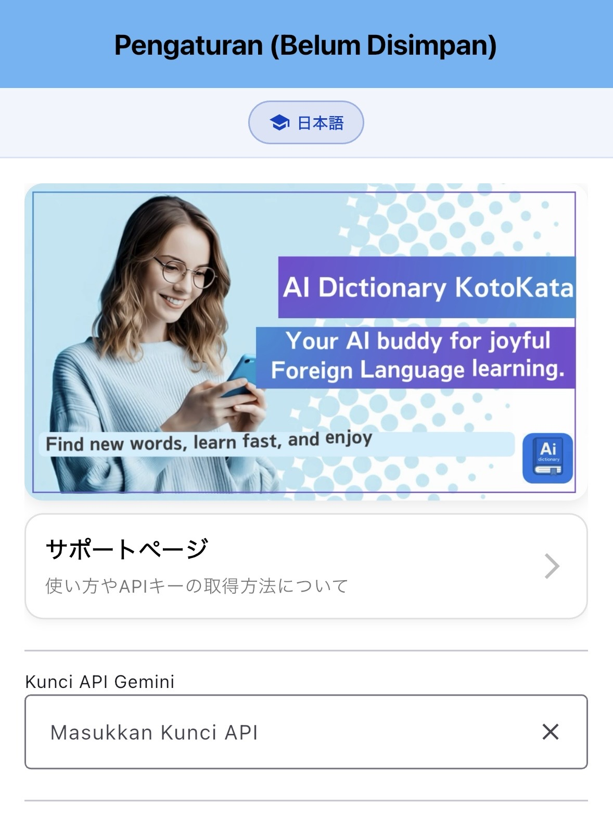⚠️ 重要な注意事項 ⚠️ Catatan Penting
• APIキーは秘密情報です。他人と共有しないでください
• 不要になったAPIキーは削除してください
• 無料枠でもKotokataは使用可能です。無料枠を利用している場合、課金されることはありません。
• 無料枠が無くなった方は有料枠で引き続き利用可能です。
• Kunci API bersifat rahasia. Jangan bagikan dengan orang lain
• Hapus kunci API yang tidak digunakan
• Kotokata dapat digunakan dengan kuota gratis. Jika menggunakan kuota gratis, tidak akan dikenakan biaya.
• Jika kuota gratis habis, Anda tetap dapat menggunakan dengan kuota berbayar.